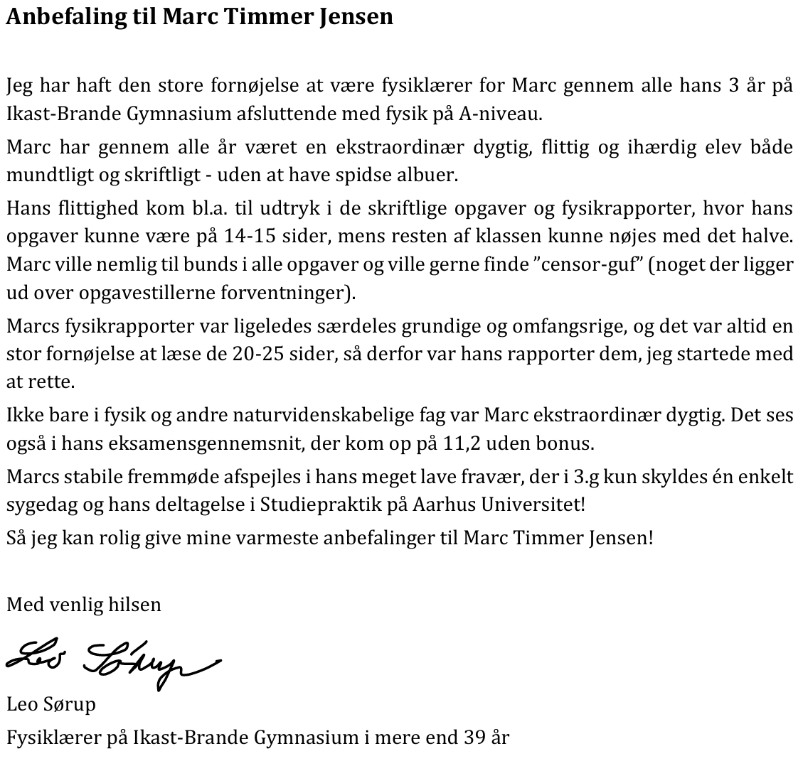
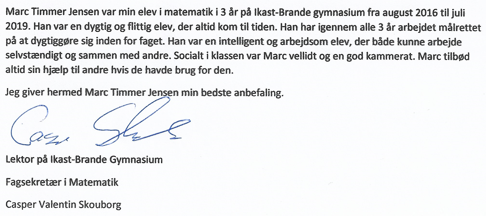

I studied in the "Super Science" class, where I took Mathematics, Physics, and Chemistry at the highest level.
My time at Ikast-Brande Gymnasium was both educational and enjoyable. I learned a lot academically and personally,
and I made some truly great friends along the way. These were some of the best years of my life, and I would gladly
relive them if I could.
Physics Teacher Recommendation - Leo:

Translation:
Recommendation to Marc Timmer Jensen
I have had the great pleasure of being Marc's physics teacher throughout his three years at Ikast-Brande Gymnasium, concluding with physics at A-level.
Throughout all these years, Marc has been an extraordinarily talented, diligent, and persistent student, both orally and in writing—without ever being overly competitive.
His hard work was particularly evident in his written assignments and physics reports, where his tasks could span 14-15 pages, while the rest of the class typically managed with half that length. Marc was determined to delve deeply into every task and was always eager to find the “examiners’ treats” (something beyond the expectations of the assignment).
Marc's physics reports were also exceptionally thorough and comprehensive, and it was always a great pleasure to read the 20-25 pages, which is why his reports were the ones I started grading first.
Not only in physics and other scientific subjects was Marc extraordinarily talented. This is also reflected in his exam average, which reached 11.2 without bonus points.
Marc's consistent attendance is evident from his very low absenteeism, which in his third year was due to just one sick day and his participation in the study practice at Aarhus University!
So I can confidently give my highest recommendations to Marc Timmer Jensen!
Best regards
Leo Sørup
Physics teacher at Ikast-Brande gymnasium for more than 39 years.
Mathematics Teacher Recommendation - Casper:

Translation:
Marc Timmer Jensen was my student in mathematics for 3 years at Ikast-Brande gymnasium from August 2016 to July 2019. He was a skilled and dedicated student, that was present always. He has though all 3 years worked determined to excell in mathematics. He was an intelligent and hard working student, that could work individually and in a team. Socially (in the classroom) Marc was liked and he was seen as a good classmate. Marc always offered his help to others if they needed it.
I hereby give Marc Timmer Jensen my best reccomendation.
Casper Skouborg
Lector at Ikast-Brande gymnasium
Subject Secretary in Mathematics
Casper Valentin Skouborg